コロナ禍に加え、ロシアによるウクライナ侵攻や大幅な円安、物価上昇、電力不足など、明るい話題が少なかった2022年。
常石グループはどのようにこの難局を乗り越えたのか。
各社社長にこの一年を振り返り、来年に向けた課題について語っていただいた。
合わせて、各社社長が思う、今年一年を表す漢字一文字も紹介する。
ツネイシCバリューズ
今年の漢字
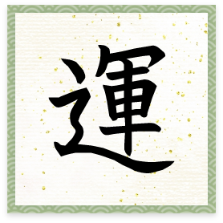
2022年の目標と進捗
全社経常利益は計画比3倍以上で着地する見込み。エネルギー価格が大きく高騰した一方で、主力である石油関連商材は販売価格が安定しており、利益が計画よりも大きく上振れている。
モビリティ事業は、自動車販売の納期長期化の悪影響があるものの、保険、車検、整備、カーリサイクル、特殊車両の各部門において概ね計画通りに進捗した。
特に車検は、新規事業として注力した立ち合い車検「マッハ車検福山曙店」が約1,500台の利用を獲得し、ネットでの評価も近隣の同業店舗のなかでトップになっている。
また、全社員がやりがいを持って楽しく働ける職場環境づくりとして、ハラスメントの防止策や「チャレンジ手当」の導入、パートから正社員への登用拡大といった取り組みも進んでいる。
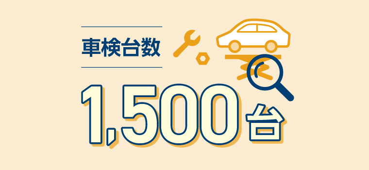
立ち合い車検の利用が1,500台を達成した
2022年のTOPICS
世界的なエネルギー価格の高騰とそれに対する日本政府の施策に注目。また、サステナブルな社会の実現および貢献は企業にとってやらなければならない活動であるという風潮にも留意した施策を採った。
2023年に向けて
「冷静にファイトしよう」「石の上にも三年」を合言葉に業務を進めていく。
ツネイシカムテックス
今年の漢字
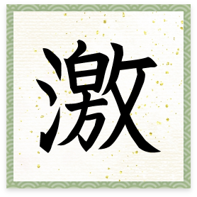
ロシアのウクライナ侵攻、エネルギー価格の高騰、大幅な縁役、新型コロナの継続、CO2削減、物価高と、時代の流れが大きく激しく動いた一年だったと思います
代表取締役社長 曽我 友成
2022年の目標と進捗
CO2削減対策としての太陽光発電設備の設置について、埼玉工場では実現したものの、FIT制度（再生可能エネルギーの固定価格買取制度）が終了し、電力会社への電気販売では投資効果が得られなくなっているため、遠隔地では新たに検討する必要が生じている。
一方、埼玉工場、福山工場では、CO2削減に向けたカーボンニュートラルLNG・電力の契約を実施した。
また、福山工場の焼成炉建設は、資材・工事費の高騰に伴い計画の見直しを行ったため、当初より遅れながらも進行している。
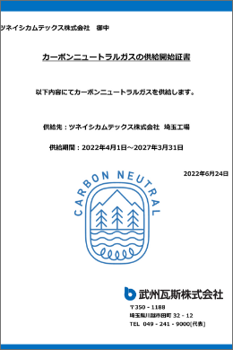
CNガス供給開始証書（武州）
2022年のTOPICS
福山焼成炉建設と池島管理型処分場建設を進めている。
2023年に向けて
燃料、電気、薬品などの経費の増大に伴い、既存事業は収益率の低下が見込まれるため、新たな成長に向け、さまざまなリサイクル事業に取り組んでいく。
ツネイシLR
今年の漢字
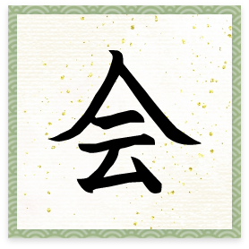
2022年はコロナ禍に伴う行動規制が徐々に緩和され、長距離の移動が可能になったことで、来園者グループの人数が以前の状態に戻ってきているように感じます。お客さま同士の再会、新たなお客さまとの出会い、そこから生まれる会話の広がりなど、さまざまな形でたくさんの“会”が生まれており、“新しい日常”でのエンターテインメントの提供による事業回復の兆しを感じられました
代表取締役社長 神原 秀明
2022年の目標と進捗
事業価値の最大化を果たすための方策として、コスト意識の徹底、環境意識の強化、新たな接遇の創出に取り組み、顧客との関係強化につなげた。
基幹事業である遊園地「みろくの里」では、既存のメインターゲットであるファミリー層とのコミュニケーションを念頭に置きつつ、コスト最適化を重要視した新規顧客へのアプローチを展開。あわせて、各メディアの取材などの積極的な誘致・受け入れを行って情報発信を強化し、顧客との接点を創出した。
2022年のTOPICS
基幹事業の「みろくの里」では、広島県の観光産業再興の一端を担う企業として2022年をチャレンジ再開する年と位置づけ、「RESTART」をテーマに事業を展開。“新しい日常”でのエンターテインメントを顧客とともに作り上げていく、実質的にもチャレンジの一年となった。
まず、3月のグランドオープンにあわせて、園内に設置したオフロードコースを楽しめる4輪バギー「BIG BEE BUGGY（ビッグビーバギー）」をスタート。3年ぶりにテレビCMを放映し、地域に存在感をアピールした。
コロナ禍を経て屋外レジャーへの期待が高まるなか、オフロードという雨天と相性のよいコンテンツを導入することで、訴求ポイントの弱かった悪天候日の楽しみの提案につなげている。
また、夏期のプール事業において、32年間大規模なリニューアルを行なってこなかったレジャープールの全域をオレンジにペイントし、顧客が抱く固定イメージを一新。
ファミリー向けのレジャープールのイメージとは一線を画す、独自のコンセプトでの商品・サービスを集めた空間づくりを実践し、開園から35年を迎えた遊園地の新たな可能性をアピールした。
さらに、コロナ禍で自粛していた冬の風物詩・ウインターイルミネーションを3年ぶりに開催。再開を心待ちにしていた顧客との再会を実現し、世代を超えて楽しめる「みろくの里」の価値を再認識してもらう機会となった。
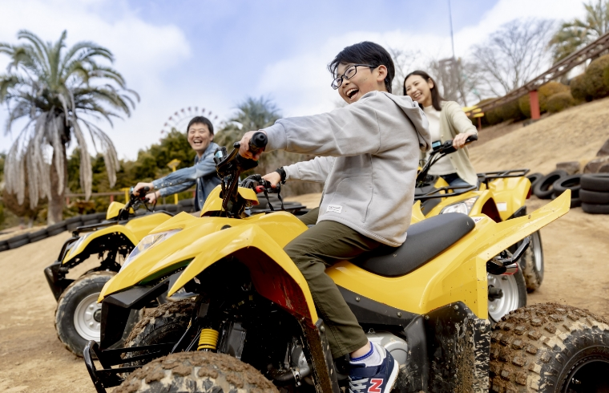
早くも人気のアトラクションとなっている「BIG BEE BUGGY」
2023年に向けて
コロナ禍の影響でコミュニケーションが希薄になっているが、そこから得られたものは、サービス業としての企業の社会的存在意義を考えるうえで大きな財産となっている。
自粛期間を経験した消費者は本当のエンターテインメントを求めている。
世界的な人材不足など外的脅威は大きな課題となっているが、顧客とともに新たなエンターテインメントを創出することで生まれるコミュニケーションが、施設の存在価値を向上させると考えている。
そのために必要な事業活動を見極め、収益構造の改善を図っていく。
TLB
今年の漢字
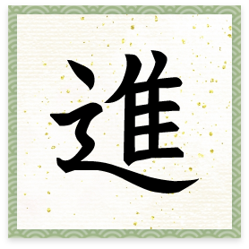
ウィズコロナ時代に適応するための進化の一歩を踏み出した年。コロナ禍で安全が重視され、移動の自由が制限されるなか、ONOMICHI U2、LOG、せとうち 湊のやどにおいて、変化を恐れず、“いつ行っても何かある”と期待していただける施設を目指して運営した結果、新しい“モノやコト”の創出を進めることができました-1614番船）が竣工し、新たに定期傭船先も決まりました
代表取締役社長 梅田 幸治
2022年の目標と進捗
他業種とのコラボレーションなどによる商品開発やイベント開催を通じて集客力の強化を図ったほか、マルチタスクなどの導入により部門間の連携を深め、スタッフ同士で助け合い、チームとして業務に臨むことでサービス力を強化した。
また、サステナブルな取り組みとして、地元の造酢会社との共同開発や規格外の果実の商品化により地域の食と農の循環を推進したほか、自転車通勤者の優遇による脱炭素への貢献に取り組んだ。
2022年のTOPICS
コロナ禍での事業基盤を強化するため、上記の通りさまざまな取り組みを進めている。
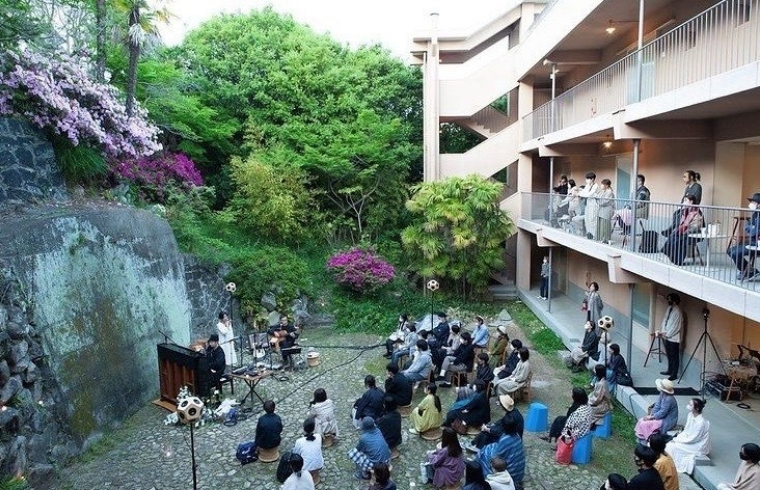
LOGの敷地内でコンサートを開催した
2023年に向けて
新会社としてスタートするにあたり、新型コロナウィルス感染対策をしっかりとりながら、ガンツウ事業、ベラビスタ事業との相乗効果を図る。尾道の自然や歴史、文化の魅力を商品、サービス、イベントの形で表現し、顧客価値の創造や街のにぎわい創出につなげていく。

せとうちクルーズ
今年の漢字
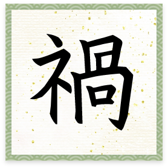
禍は予期していなかった災難、不幸な出来事を意味します。大きなエポックといえばコロナ禍ですが、それ以外にも、ロシア軍のウクライナ侵攻、安倍晋三元首相の銃撃、知床観光船KAZU Ⅰの沈没などインパクトのある事件・事故が相次いで起こったため、この一文字を選びました U2、LOG、せとうち 湊のやどにおいて、変化を恐れず、“いつ行っても何かある”と期待していただける施設を目指して運営した結果、新しい“モノやコト”の創出を進めることができました-1614番船）が竣工し、新たに定期傭船先も決まりました
せとうちクルーズ／ツネイシリゾート 代表取締役社長 松本 一宏
2022年の目標と進捗
2021年は新型コロナウィルス感染症の緊急事態宣言が発出されなかったため、ガンツウの運航を停止させる事態にはならなかったものの、年初から感染拡大の影響はあり、年間目標100本の航海に対して97本を催行し、延べ約2,400人の集客となった。
売上は過去最大の15億円の大台に乗る勢い。単年ではあるが、5年目にして経常利益ベースで黒字化が見えている。
SDGsに関しては、日常で使用する紙資源の削減を皮切りに、飲料水をペットボトルからガラスや紙の容器のものに変更するなど、プラスチックの使用削減にも取り組んでいる。
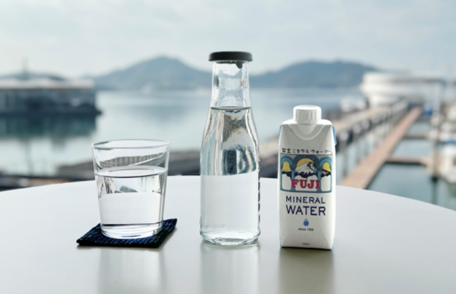
ガンツウで提供する飲料水をガラス、紙容器のものに変更
2022年のTOPICS
特筆すべきは、売上の増加に伴う黒字化への転換とリピーター率の向上。ただ、全世界の経済に大きな影響を与えたロシアのウクライナへの侵攻は、ガンツウにも燃油代や食材の高騰という形で影を落としている。
また、知床観光船「KAZU Ⅰ」の沈没事故に際し、規模こそちがうものの、同業者として業務改善を求められることとなり、「安心と信頼」を再認識させられる出来事となっている。
2023年に向けて
より付加価値の高い唯一無二の船旅を提供することにより、インバウンドを含めたガンツウファンの増大を目指す。また、事業継続のため、黒字の継続を図っていく。
さらに、社員が誇りを持って働き続けたいと思える職場環境づくりを強化する。
ツネイシリゾート
2022年の目標と進捗
年初から新型コロナウィルス第6波により出鼻をくじかれたが、4月以降は持ち直し、第7波の影響を受けながらも、年間を通じてほぼ予算通りの売上を達成した。採算も、昨年に続き、経常利益ベースでの黒字化を達成する見込み。,400人の集客となった。
ホテル部門では、客室稼働率は目標に届いていないが、客室平均単価（ADR）は予算に比べ高価格で推移した。
婚礼部門は、コロナ禍で挙式スタイルが変化するなかで年間獲得目標件数を上回っており、売上目標も達成する見込みだ。一方、マリーナ部門は売上・採算ともに予算に届いていない。
2022年のTOPICS
特筆すべきは、売上の増加に伴う黒字化への転換とリピーター率の向上。ただ、全世界の経済に大きな影響を与えたロシアのウクライナへの侵攻は、ガンツウにも燃油代や食材の高騰という形で影を落としている。
また、知床観光船「KAZU Ⅰ」の沈没事故に際し、規模こそちがうものの、同業者として業務改善を求められることとなり、「安心と信頼」を再認識させられる出来事となっている。
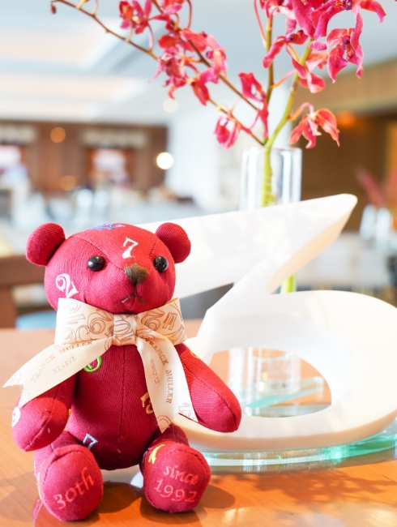
フランクミュラー×ベラビスタのコラボレーションアイテム
2023年に向けて
新会社としてスタートするにあたり、ベラビスタだけでなく、ガンツウ事業やONOMICHI U2、LOG事業との相乗効果の創出を図り、事業継続のために“黒字化”を追求する。
また、社員が誇りを持って働き続けたいと思える職場環境づくりを強化する。
善きにつけ悪しきにつけ“運”のありがたさを実感する一年でした
代表取締役社長 津幡 靖久